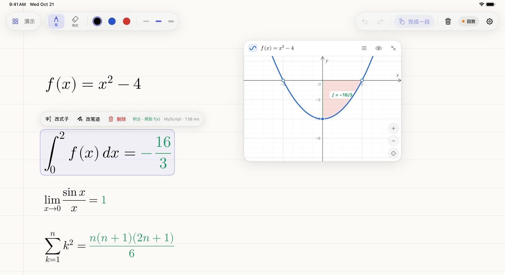
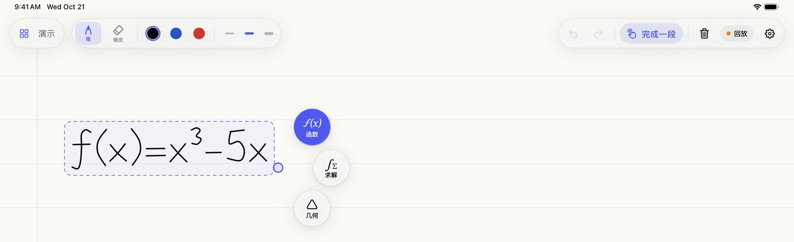
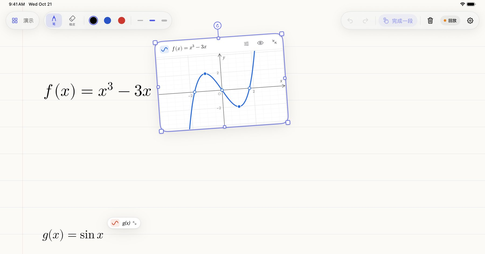
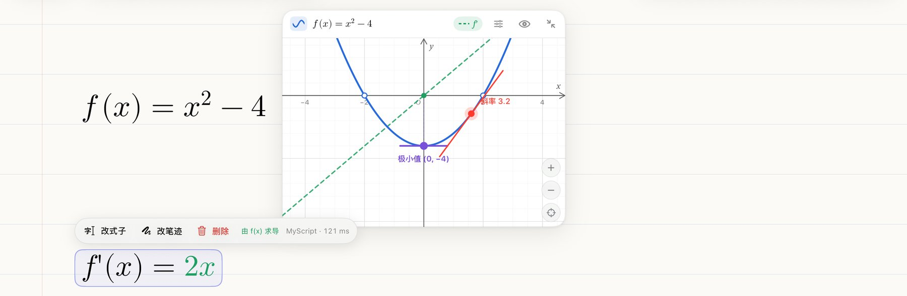
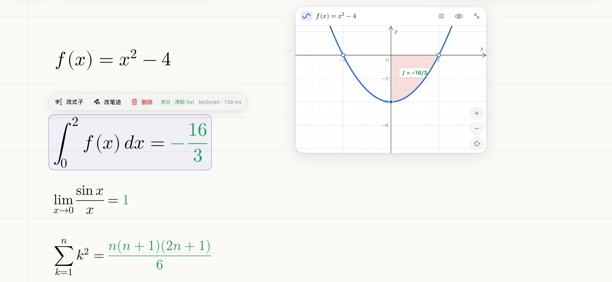
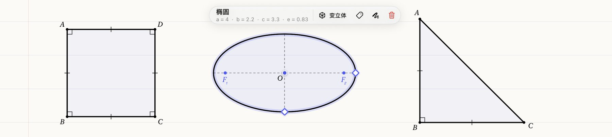
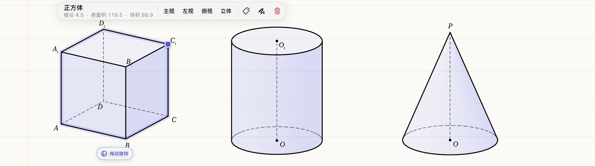
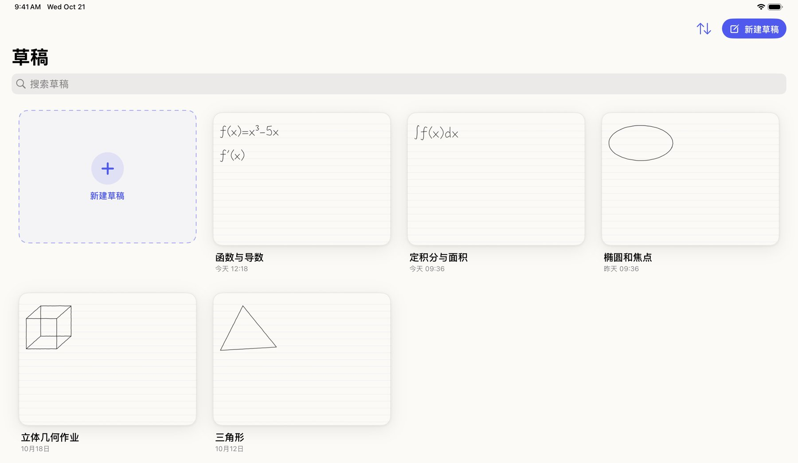
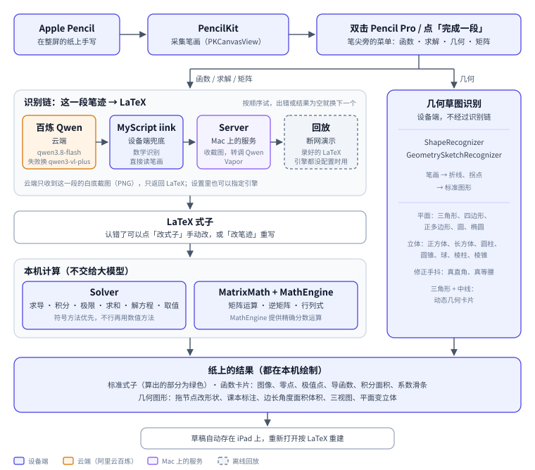

一款 iPad + Apple Pencil 原生应用。学生在整屏的纸上手写数学，写完双击 Pencil，AI 读懂这段手写，原地换成标准式子、可拖动缩放的函数图像、算好的导数、积分、极限和求和，以及可以拖节点的几何图形——草稿纸本身就是计算和作图工具。

学生在平板上演算时，常常想看一眼函数图像、验算一个积分或极限、把随手画的图变成标准的几何图形。现在的做法是切到计算器或作图软件，把式子重新敲一遍——手写和工具之间来回切换，思路被打断。
不让学生离开草稿纸：AI 直接读懂手写，结果原地出现在纸上。AI 负责「读懂」（手写 → LaTeX），计算交给本机的符号和数值方法，不让大模型去算。面向中学和大学低年级学生。

| 场景 | 在纸上做什么 | 用到的功能 |
|---|---|---|
| 学函数 | 写下 f(x)，看图像、零点、极值点；拖滑条改系数，看图像怎么变。 | 函数卡片 |
| 微积分作业验算 | 写下积分、极限、求和，直接得到结果；对写过的函数求导、求定积分，卡片里画出导函数和面积。 | 求解 |
| 平面和立体几何 | 手画三角形、椭圆、正方体，变成标准图形；拖节点看边长、角度、面积怎么变；看三视图。 | 几何 |
| 线性代数 | 手写矩阵，算乘积、逆矩阵、行列式。 | 矩阵 |
| 整理作业 | 按题目分成多份草稿，下次打开回到上次的位置。 | 多份草稿 |
本节截图来自 CI：在 iPad 模拟器上用 -demo 参数摆出的画面（main 分支 05a8037，2026-10-21），笔迹是预置的演示笔迹。画面里操作条上的引擎名和毫秒数是演示数据，不是实测值。

写下要算的东西，双击选「求解」，App 直接算出结果并换成标准式子，算出来的部分是绿色的。引用的函数一改（改笔迹、改式子、拖滑条），下面的结果跟着重新算。怎么算：能用符号方法（代入、洛必达、原函数、求和公式）就给准确值；不行再用数值方法（双指数积分、Richardson 外推），并尽量认回 π/4、e − 1、√2、分数这样的形式，认不出就写 ≈ 六位有效数字。全部在 iPad 本机完成，不调用大模型。


| 类型 | 手写的式子 → App 写回的结果（README 中的例子） |
|---|---|
| 求导 | 在函数下面写 f ′(x)、f ″(x)、y ′、f ′(2)；也可以写 d/dx (x2 sin x) |
| 积分 | ∫ xex dx = xex − ex + C；∫10 x2 dx = 1/3；∫∞0 e−x dx = 1；∫20 f(x) dx = −16/3（卡片里涂出面积） |
| 极限 | limx→0 sin x / x = 1；limx→∞ (1 + 1/x)x = e；单侧 x → 0+；limx→3 f(x) 在卡片里标出那一点；左右极限不等、振荡时写明「极限不存在」 |
| 求和 / 连乘 | ∑nk=1 k2 = n(n+1)(2n+1)/6；∑∞n=1 1/n2 = π2/6；∏5k=1 k = 120；发散时写明「级数发散」 |
| 方程 / 取值 | x2 − 4 = 0 ⇒ x = ±2；对写过的函数取值 f(3)；不引用函数的完整算式直接算 |
画一个图形，双击选「几何」，草图在本机被认成标准图形，画在纸上原来的位置。


pmatrix、bmatrix 等）时，菜单多一枚「矩阵」，点开是「计算 / 求逆矩阵 / 求行列式」。Packages/InkCore（MatrixMath.swift、MatrixTests.swift）。
一段手写从笔尖到纸上结果的路径。函数、求解、矩阵走识别链拿到 LaTeX，再由本机计算；几何直接在本机识别笔画，不经过识别链。

| 模块 | 目录 | 做什么 |
|---|---|---|
| App | app/InkTutor | SwiftUI + PencilKit：画布、笔尖菜单、操作条、草稿画廊和保存，把各模块接起来 |
| SceneUI | Packages/SceneUI | 函数图像、系数滑条、极值点和切线、导函数、动态几何；公式用 SwiftMath 渲染 |
| InkCore | Packages/InkCore | 识别器协议和实现（百炼、Server、回放）、降级链、Solver、矩阵、几何草图识别 |
| MathEngine | Packages/MathEngine | 纯 Swift 数学包：LaTeX 多项式解析、精确分数、求导比对；没有网络、没有模型 |
| Server | Server | Mac 上的 Vapor 服务：/recognize 收截图转调 Qwen，带回放 |
| MyScript iink | SDK 4.5.1（Swift 包） | 设备端数学识别；证书和识别资源不进仓库 |
{"latex": …}。qwen3.8-flash（关闭思考），失败换 qwen3-vl-plus。
提示词只要求照抄。识别提示词要求「逐字照抄，不做任何数学判断；绝对不要改正、补全、化简或调整项的顺序」。2026-10-19 用手写风格字体（不是真人手写）测试写错的式子 3x2 − 3x：qwen3.8-flash、qwen3.8-max、qwen3-vl-plus 共 8 次，0 次被「改对」；单行耗时 flash 约 1.1–2 秒，max 约 1.7–2.9 秒。真人手写样本还没有系统地测。
读懂之后的计算全部回到本机：Solver 用符号方法求准确值，不行再用数值积分和外推，并尽量认回 π、e、分数；矩阵用精确分数；几何草图用笔画规则识别拐点和形状。大模型只负责把手写变成 LaTeX，结果不依赖它的推理。
| 环节 | 位置 | 说明 |
|---|---|---|
| 采集笔画 | 设备 | PencilKit |
| 决定何时识别、识别哪一段 | 设备 | 双击 Pencil 或点「完成一段」，只处理这一段 |
| 手写数学 → LaTeX | 云端为主，设备兜底 | 百炼 Qwen（云端）→ MyScript（设备）→ Mac 上的 Server（转调 Qwen） |
| 求导、积分、极限、求和、解方程、矩阵 | 设备 | Solver、MatrixMath、MathEngine |
| 几何识别、立体图形、三视图 | 设备 | ShapeRecognizer、GeometrySketchRecognizer |
| 函数图像、公式渲染 | 设备 | SceneUI、SwiftMath |
| 草稿保存 | 设备 | 存在 iPad 本机 |
能编译、签名、装到设备上的 Mac 只有一台，演示机是一台 iPad Pro + Pencil Pro。CI 在 main（05a8037）上通过：Linux 上 MathEngine、InkCore、Server 的 swift test，以及 iOS 模拟器编译和截图。
| 功能 | 状态 | 说明 |
|---|---|---|
| 函数（识别 → 标准式子 → 函数卡片） | iPad 真机实测 | 在演示用的 iPad 上跑过 |
| 求导 | iPad 真机实测 | 在演示用的 iPad 上跑过 |
| 积分、极限、求和、解方程 | 仅模拟器 | 模拟器编译、截图；还没装到 iPad 上 |
| 几何（平面、立体、三视图、变立体） | 仅模拟器 | 模拟器编译、截图；还没装到 iPad 上 |
| 矩阵 | 仅模拟器 | 模拟器编译、单元测试；没有截图，还没装到 iPad 上 |
| 多份草稿 | 修改后未复测 | 模拟器截图；提交记录里写了真机上缩略图变白，已修改，修改后的版本还没确认在真机上复测 |
| MyScript 实际识别效果 | 未系统测 | 已接入；真人手写的准确率、没网时的表现还没测 |
| Qwen 识别 | 未系统测 | 只用手写风格字体测过；真人手写样本还没测 |
| Pencil 双击回调、落点、整笔擦除 | 记录未填 | 逐项记录表 docs/device.md 还没填写 |
iPad App：画布、笔尖菜单、草稿；唯一能签名装机的 Mac 在 P1 手上。
函数图像、系数滑条、导函数、动态几何、公式渲染。
识别链（百炼 Qwen、Server、回放）、提示词与实测、Mac 上的 Server。
纯 Swift 数学引擎：多项式解析、精确分数、求导比对。
app/InkTutor.xcodeproj。MyScript 证书 MyCertificate.c 放到 app/InkTutor/MyScriptCertificate/（不在仓库里）；没放证书也能编译运行，识别退回其他引擎。百炼 Key、Server 地址在 App 的设置里填，只存在这台 iPad 上。cd Server && swift run InkTutorServer（端口 8080，百炼 Key 从环境变量 DASHSCOPE_API_KEY 或 Server/.secrets/dashscope_key.txt 读）。swift test --package-path Packages/MathEngine，InkCore、Server 同理；Linux 上能跑。